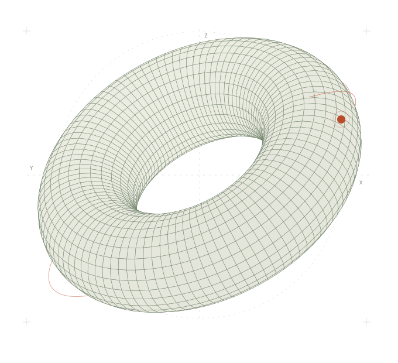

01 / RESEARCH
六个方向，一个愿景。
让智能理解物理世界，也理解身处其中的人。我们关注从基础表示到社会协作的连续问题。
01几何与空间GEOMETRY & SPATIAL REPRESENTATION
研究空间、形状与结构的表达，让智能从观测中建立对三维世界的理解。
如何从看见，走向理解空间？
02物理世界PHYSICS & WORLD MODELS
探索物理规律、因果关系与世界模型，研究对变化的预测，以及行动如何改变世界。
如何理解世界将会怎样变化？
03具身智能EMBODIMENT & ACTION
连接感知、推理与行动，研究智能如何通过身体与环境交互，并在真实任务中形成能力。
如何在行动中认识世界？
04永续学习CONTINUAL LEARNING
研究经验的积累、记忆的组织与能力的迁移，探索在持续变化的环境中不断学习的智能。
如何不断学习，又不忘记？
05心智模型MINDS & INTENTIONS
探索对自身与他者的认知，研究意图、信念与情境的建模，让交互建立在相互理解之上。
如何理解行动背后的意图？
06人类社会中的机器人HUMAN–ROBOT COEXISTENCE
研究协作、社会规范与长期共处，让机器人在日常生活中自然参与，尊重人的意图、边界与选择。
如何成为人类社会自然的一员？
02 / A CONNECTED INQUIRY
从世界，到心智，到共生。
这些方向彼此相连。理解世界为行动提供基础，经验推动学习，而理解人类赋予协作以意义。
几何 · 物理 · 具身
在真实世界里，建立理解。
从可感知的结构，到可预测的变化，再到可执行的行动。我们探索几何表示、物理建模与具身交互如何共同构成智能的基础。
经验 · 记忆 · 心智
让每一次经历，成为成长。
智能需要在时间中积累经验，也需要在交互中理解自身与他者。我们研究永续学习与心智模型之间的联系，探索知识、记忆和意图如何共同支持适应。
理解 · 协作 · 共处
走入日常，融入社会。
从完成一次任务，到理解一段关系。我们关注机器人如何在长期交互中理解情境、遵循社会规范，与人建立自然、可靠而有边界的协作。
03 / ABOUT Q-LAB
从基本问题出发，
走向共同生活的未来。
Q-lab 致力于 AI 基础研究。我们关注现实世界的基本结构，以及建立在这些结构之上的智能系统。
我们的愿景是让机器人不仅能够感知与行动，也能够持续学习、理解人类，在人与世界的联系中找到自己的位置，无缝融入人类社会。
在 GitHub 探索 Q-lab